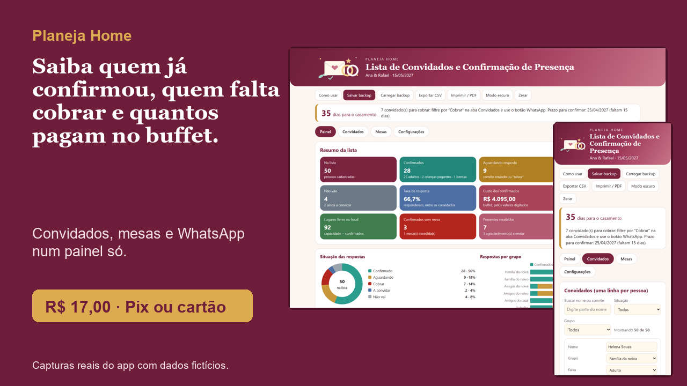
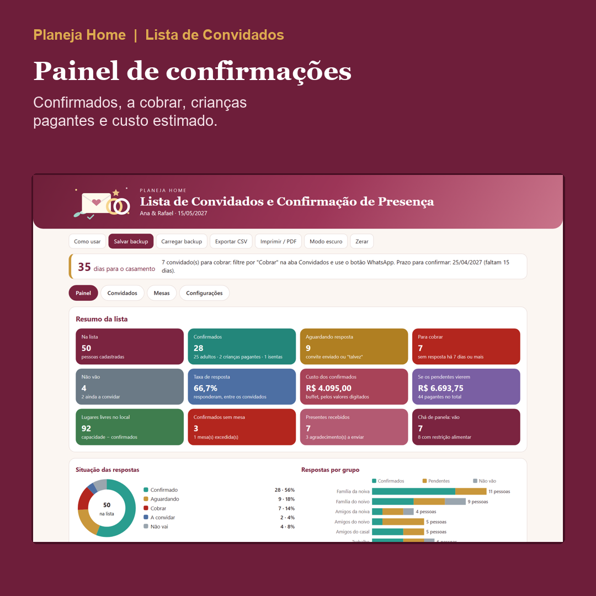
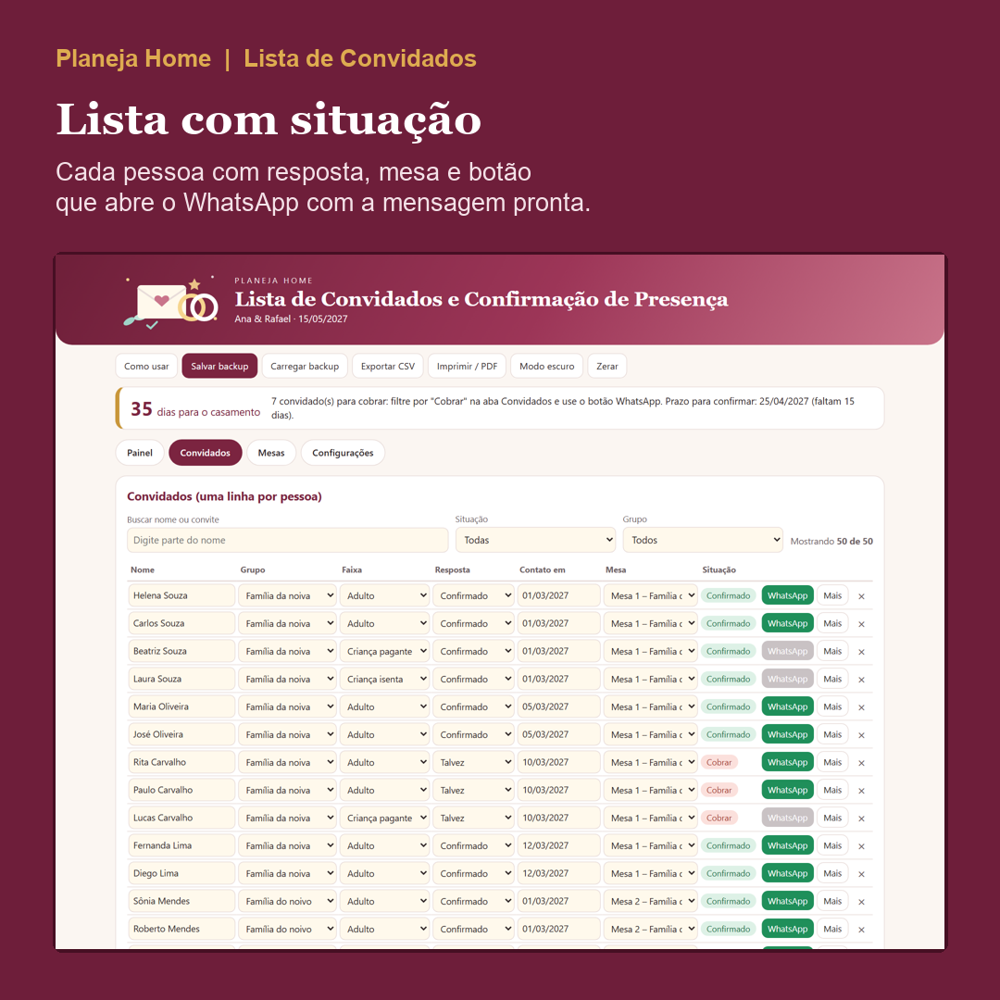
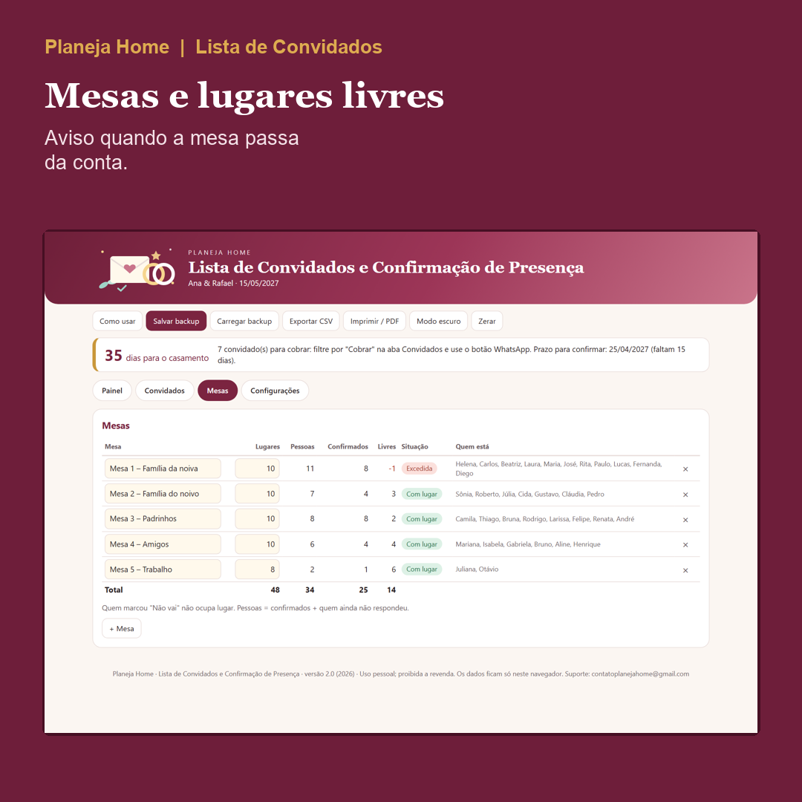
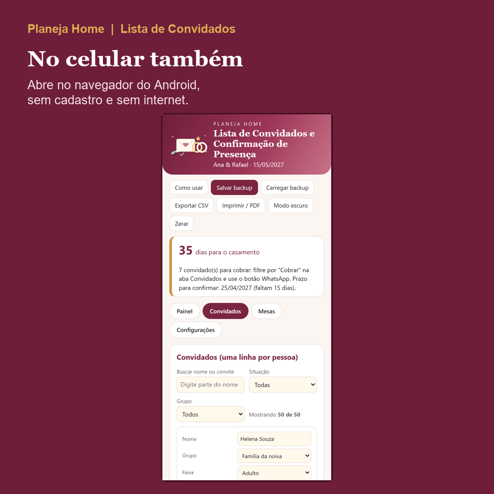

Planeja Home
Saiba quem já confirmou presença, quem falta cobrar e quantos pagam no buffet do seu casamento.
A Lista de Convidados e Confirmação de Presença é um app que abre no navegador do computador ou do celular Android, sem internet e sem cadastro. Convidados, respostas, mesas e crianças pagantes ficam num painel só.
Quero a Lista de Convidados por R$ 17,00

O problema
As respostas chegam por mensagem, por áudio e pela boca da sua tia. Na hora de passar o número ao buffet, ninguém sabe ao certo quantos adultos vêm, quantas crianças pagam e quem nunca respondeu.
O que é
Você lista cada convidado, marca a resposta e acompanha tudo num painel. Quando o prazo sem resposta passa, a situação vira "Cobrar" e o botão "WhatsApp" abre a conversa já com a mensagem pronta; você só aperta enviar.
O que vem
- App em branco, para a sua lista, e app EXEMPLO com 50 convidados fictícios, para ver tudo funcionando.
- Guia em PDF ilustrado, com 19 páginas e prints numerados.
- Painel com 12 cartões e 4 gráficos: confirmados, aguardando, para cobrar, adultos, crianças pagantes e isentas, lugares livres e mais.
- Lista com grupo, faixa, resposta, mesa, restrição alimentar e observação, com busca e filtros.
- Mesas com lugares, ocupação e aviso quando uma passa da conta.
- Custo estimado do buffet com os valores que você digita, hoje e se todos os pendentes vierem.
- Presentes recebidos, agradecimentos pendentes e marcação do convidado do chá de panela ou de casa nova.
- Backup em arquivo, exportação para CSV, impressão ou PDF e modo escuro.




Capturas reais do app de exemplo, com dados fictícios.
Para quem é
Noivos que confirmam presença pelo WhatsApp e precisam passar números fechados ao buffet e montar as mesas.
Para quem não é
- Quem quer envio automático de mensagens: aqui o botão abre a conversa e você envia.
- Quem quer custo garantido: o valor é uma estimativa com os números do seu contrato, e a regra de idade da criança pagante é do buffet.
- Quem quer sincronização na nuvem: os dados ficam no navegador do seu aparelho.
Como acessar
Depois da compra, baixe o .zip e o guia em PDF pelo e-mail ou pela área de membros da Kiwify. Extraia o .zip e abra o app com dois cliques (Chrome ou Edge). Abra o EXEMPLO para ver o painel funcionando e use o app em branco para a sua lista. No iPhone e no iPad, o arquivo abre só para consulta: para preencher, use um computador ou um Android e leve os dados pelo backup.
Quanto custa
R$ 17,00
Pagamento único. Pix ou cartão (parcelas com juros do cartão, mostradas no checkout).
Garantia de 7 dias
Se não for o que você esperava ou o arquivo não abrir, peça o reembolso em até 7 dias pela Kiwify. Sem perguntas.
Perguntas frequentes
O que é, exatamente?
Um app que abre no navegador para controlar os convidados do casamento: quem confirmou, quem não vai, quem falta cobrar, em que mesa cada um senta e quantos adultos e crianças pagantes o buffet vai cobrar.
O que vem no pacote?
Um .zip com o app em branco (para a sua lista) e o app EXEMPLO com 50 convidados fictícios, mais o guia em PDF ilustrado, de 19 páginas.
O app envia as mensagens de WhatsApp sozinho?
Não. Cada linha tem um botão "WhatsApp": ele abre a conversa com o número da pessoa e a mensagem pronta, e você mesmo envia. Não há disparo em massa.
Posso mudar o texto da mensagem?
Sim, em Configurações. Use {nome} onde quiser o primeiro nome do convidado. Evite os símbolos "&" e "#" na mensagem, porque eles quebram o link.
Como o app decide quem está para cobrar?
Pela data do contato e pelo prazo de confirmação. Se passaram os dias sem resposta que você definiu (padrão: 7), a situação vira "Cobrar".
Como ele calcula o custo do buffet?
Valor por adulto vezes adultos confirmados, mais valor por criança pagante vezes crianças pagantes confirmadas. Criança isenta não entra. Você digita os valores; o resultado é uma estimativa, e a regra de idade da criança é a do seu buffet.
Preciso de internet, de Excel ou de cadastro?
Não. Funciona offline, sem Excel, sem conta e sem instalação. Só o botão do WhatsApp usa a internet, na hora do clique.
Funciona no celular?
Funciona no navegador do computador e do celular Android. No iPhone e no iPad, o arquivo abre só para consulta: para preencher, use um computador ou um Android e leve os dados pelo backup.
Meus dados ficam salvos onde?
No navegador do aparelho, sem enviar nada para a internet. Use "Salvar backup" de vez em quando e "Carregar backup" para recuperar ou levar para outro aparelho.
Serve também para o chá de panela ou de casa nova?
Sim. Cada convidado tem uma marca "evento extra", e o painel conta quantos estão convidados para ele.
Posso criar quantas mesas e convidados eu precisar?
Você adiciona uma linha por pessoa e cria as mesas que quiser. O painel mostra os lugares livres e avisa quando uma mesa passa da conta.
Como funciona a garantia?
7 dias a partir da compra. Peça o reembolso pela Kiwify ou responda o e-mail da compra; devolvemos sem perguntas.